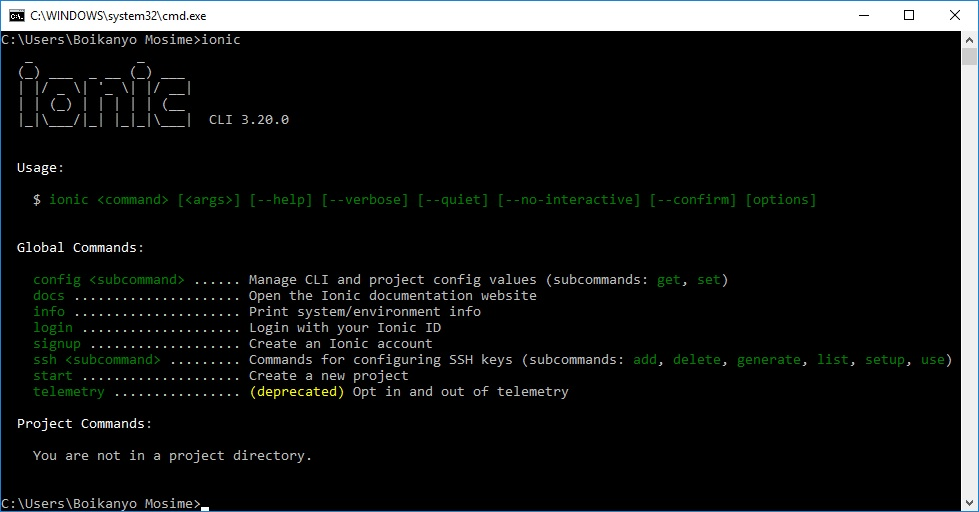

Please make sure latest Node 6 LTS and NPM 3+ are installed then you install the CLI(Command Line Interface) globally (you may need sudo)
npm install -g ionic@latest.
You'll see this Interface
If want to see that you have installed Ionic.
ionic
Then you'll see as a result of ionic being installed
